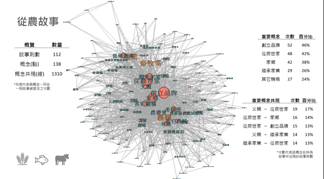
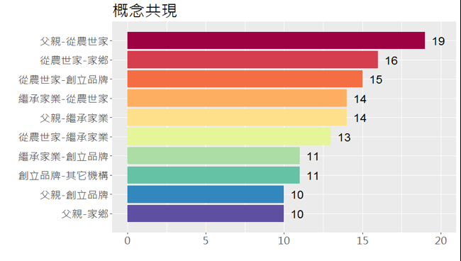
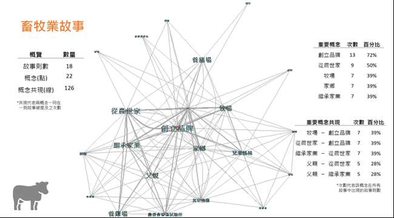
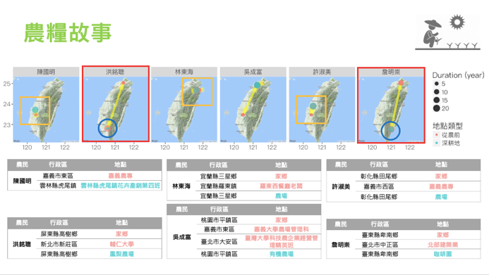

Hello! I am Annie (廖晧宇).
I have Geography and quantitative science backgrounds, which involve in trainings of critical and structural thinking along with programming. I have several teaching experiences and design teaching materials related to my specialties and research interests, including GIS, spatial data analysis, cartography, data visualization, and remote sensing. I found my fondness to English in my early twenties, and enjoy speaking English or doing work related to using this language. I also like to work on tasks and projects requiring teamwork, which always excites me when new ideas popping up during brainstorming, and makes me realize the unlimited possibilities when working with people.
In my leisure time, I enjoy doing home workouts, jogging, cooking, and watching TV series on Netflix. I also play volleyball in weekends with friends.
It’s really nice to meet you. You may also find me from the following contact info. or on social media.
# GIS # Machine Learning # Statistical Modeling # Spatial Data Analysis # Cartography & Mapping # Data Visualization
Link to the interactive web map!
This project proposes an analytic framework for making city flow maps of Hong Kong from questionnaire data. We built up a workflow of extracting and defining different migration types including routine flows and usual-visit flows. They can be visualized at two scales, either plotting every individual’s flow or mapping flows between districts which aggregate individual data.
Data cleaning, processing, and building geographical dataset were all done with R programming. Interactive web maps were made with CARTO.
*On account of privacy issue, only the cross-district flow maps (which aggregate individual flows to administrative divisions) are shown here (the links above).
This project explores the spatial patterns of rental house prices and reveals the factors that determine the prices. The spatial analysis in this study were all done in R, and the results were wrapped up in an interactive app built with R shiny.
For more details:
* This system is a team project with my two classmates in graduate schools, 劉怡慧 and 謝澤星.
In Taiwan, the 591 house rental website is one of the most commonly used platforms for people to look for house rentals. When searching rental homes, a convenient location with great accessibility to public transport is often a major concern, especially in cities.
However, the 591 house rental website provides the distance between the listed houses and the closest MRT stations; however, besides MRT services, bus and bike-sharing systems are also very common public transportation in the Taipei metropolitan area including Taipei and New Taipei City. Moreover, each house searcher may have their own preferences for public transport. While some people consider bus system convenient to take them anywhere in the city, some might value travel time more and prefer the MRT to bus services since it is less likely to be affected by traffic jams.
Therefore, we designed an innovative house rental recommendation system and built up a prototype with R shiny. This system enables users to not only filter available houses by district, price and area, but input their personal preferences for the accessibility to different kinds of public transport. Our system will list customized searching results in order, and also show the location of each recommended house on an interactive map.
For more details:
*This system is a team project with my two classmates in graduate schools, 劉怡慧 and 謝澤星.
Monitoring urban standing water after a heavy rain event for spatially targeting mosquito larval control in the urban built environment: A multilevel image analysis
Detecting urban water bodies in SAR images: A modeling framework for estimating radar double-bounce effect
Under the impact of global warming and climate change, mosquito-borne diseases, such as dengue fever and Zika virus, are expanding geographically in subtropical metropolises due to the high weather sensitivity of vectors and viruses. Rain-induced standing water bodies in cities could become mosquito larvae-favorable environments and trigger disease transmission in high populated areas. However, investigating possible mosquito breeding sites is a labor-intensive campaign for health authorities; it is also difficult to effectively identify specific rain-induced standing water environments, such as water-filled containers and watery facilities. The objective of this study is to propose a multilevel image analysis framework that integrates the multi-source remote sensing data of weather and built environments from various spatial scales to identify urban rain-induced standing water environments. Our aims are not only to locate potential standing water after a heavy rain but also to identify water-prone urban environmental characteristics along with different rainfall patterns, such as rain quantity, intensity and duration. Our multilevel modeling results indicate that urban areas with neighboring areas with low density or low-height buildings (e.g., less compact regions) and high-density greenness (e.g., urban gardens, parks, or sidewalk trees) are more susceptible to having standing water after rainfall. Moreover, a larger rainfall quantity under these building characteristics could promote the occurrence probability of standing water, whereas a higher rainfall intensity reduces the probability. In summary, the methodological framework demonstrates the feasibility of integrating multiscale remote sensing imagery to effectively detect after-rain standing water, and our findings could also provide health authorities with reference guidelines for geographically prioritizing the targets of mosquito larval control and elimination in urban areas.
rain-induced standing water, built environment, remote sensing, mosquito-borne diseases, multilevel modeling
Short cut to knowing this study:
People need the help of maps during traveling or finding a new restaurant. Maps carry geospatial information of a place, such as landmarks, street names, road structures, coordinate systems and so on. When people are reading maps, the first thing to do is to fit the 2D map into the 3D real world, aligning the map to the environment to build a sense of direction. This process is called the map alignment. Yet, when the map and the environment are not perfectly aligned, people need to rotate either one to match the two spaces. During this process, the extra time and effort that cause people to perform this rotation is considered the alignment effect.
In previous studies, people’s mental rotation ability has been found related to the difficulties they may encounter when reading misaligned maps. A person with a high mental rotation ability is more likely to get free from the alignment effect. However, if we want to improve the rotation and map aligning skills, it is not only about knowing what causes the alignment effect but how people process spatial information when reading maps and rotate different spaces. Fortunately, the eye tracing technique can record and visualize where people see, revealing how people read things and providing insights into their ways of reasoning and problem solving. Therefore, this study took an eye tracking approach to explore the process of how people reason spaces and build senses of direction from map-environment aligning tasks.
We designed 6 map aligning tasks with varied difficulties and different numbers of elements in the map, and randomly chose 12 university students to participate the experiment. After the experiment, we classified eye tracking data from the 12 subjects into three groups (low, medium and high) based on their map aligning skills, and built an analysis framework to explore the spatial reasoning process among different groups. The comparison and the eye movement pattern from group HIGH in specific, may help us identify important map aligning strategies and establish guidelines to map design.
Our preliminary results showed that group HIGH subjects shared similar eye patterns when aligning maps, implying that common rules of geospatial reasoning could be identified. Also, while group LOW subjects spent more time on maps in difficult tasks, landmarks could be better clues than street names to rotate the spaces and build a sense of direction. Meanwhile, more times of matching the same of object between the map and the environment may help the alignment process as well. In sum, we built up a research framework for not only measuring people’s map aligning performances but identifying some common rules of map-and-real-world rotation to fit the two geo-spaces in a more effective way. Last but not least, this study also lightens up the importance and value of adopting an eye tracking approach in cartographic studies, and brings a new perspective to understand the process of geo-space reasoning.
After all, our eyes never lie!
Short cut to knowing this study:
Satellite remote sensing is an effective method for extracting water bodies on a large scale. Radar imagery, such as synthetic aperture radar (SAR) imagery, can penetrate clouds and provide opportunities for water body identification when in situ observations are difficult to obtain because of severe weather conditions. However, when using SAR images in urban areas to extract water bodies, the radar’s double-bounce effect results in complicated backscatter patterns of water near urban features such as buildings due to the side-looking properties of SAR sensors and the vertical urban structures. Therefore, the objective of this study is to propose a reliable urban water extraction framework for SAR images that integrates urban surface morphological features for controlling radar’s multiple bounces. Statistical (logistic regression) and machine-learning (random forest) models were used to explore how radar’s double-bounce effect influences the prediction performance of urban water extraction. Our findings indicate that when extracting urban water bodies, urban water’s backscatter values could be significantly interfered by the neighboring building density above a threshold height that contributes to radar’s multiple bounces. Without model calibration, our framework incorporating urban surface morphology demonstrates high prediction ability with an Area Under the Curve (AUC) of 0.914 and with 97.0% of urban water cells correctly identified by testing in another city sharing similar urban forms. In summary, our study provides a better understanding of the role of the urban surface morphology in the double-bounce effect in SAR images, specifically for differentiating urban water and land, thereby improving the accuracy of urban water extraction and enhancing the feasibility of further applications of SAR imagery under complex urban landscapes.
Synthetic aperture radar (SAR) images, Urban morphology, Water body extraction, Radar’s double-bounce effect, Sentinel-1 satellites
For more details:
Short cut to knowing this study:
When people are visiting a place that they have never been before, maps can be very useful to help people grab information of the surroundings and build a sense of direction. Yet, in reality, during most of the time, the direction of the map is not perfectly aligned to the street view in front of them, which requires people to make some degrees of map rotation. During this process, the extra time and effort taken for people to match the map and the real-world environment is called the alignment effect.
The alignment effect was proved in previous studies to be positively correlated to a person’s mental rotation ability. However, whether mental rotation is a nature or nurture ability has gone through long debates, which have highlighted some biological factors such as sex, hormones, and brain structures, and a person’s spatial experiences including educational backgrounds, social gender roles, spatial tasks and activities. From another perspective, some studies proposed that mental rotation abilities are hybrids of nature and nurture related factors, which were intertwined in a manner that were difficult to separate from. These factors are found to be related to a person’s mental rotation ability; however, in reality, whether and how spatial experiences may influence people’s map aligning abilities remain unclear. Therefore, this study took people’s academic backgrounds and travel styles as factors from two aspects to explore the relationship between a person’s nurture experiences and his/her map aligning abilities.
We designed an experiment framework to answer this curiosity, which included designing map aligning tasks with varied difficulties, drawing up questionnaires that evaluate people’s educational backgrounds and travel style, and applying eye tracking techniques to capture peoples’ attention and identify different reading processes that could result from different nurture experiences. Our results show that people with more mathematical and logical trainings during their educations have better map aligning performances. As for different travel styles, independent travel experiences including self-driving and having private tours may also develop a person’s map aligning skills, resulting in higher scores of map aligning tasks from our experiment. Moreover, the interaction effects of people’s education and travel factors imply that travel experiences have more profound impacts on people with less mathematical education backgrounds.
At last, what does the eye movement data tells us? Besides having a more independent travel plan in the next trip, how can people improve their map aligning skills? By learning the eye movement from people with high performances, grabbing key elements such as landmarks and street names could be helpful for the alignment. Also, matching the same elements between the map and the environment back and forth may build up a stronger sense of integration of the two spaces, and make the rotation become easier.
In the end, this study reveals the value and importance of the nurture effects that can cultivate a person’s map-aligning skills, especially with independent travel styles and mathematical academic trainings. Also, with the eye tracking techniques, a more effective way of aligning 2D maps to the environment can be followed to build spatial understandings of the real world with the help of maps, and improve map-aligning abilities.
This project build up a prototype for analyzing and visualization texts. We took the story articles on the Youth Farming Counselling Platform as our study case, parsing texts to extract key information and build up relationships between keywords. In other words, this framework proposes an analytic framework that converts text materials into structured data to quantify and visualize stories.
The analysis and visualization were all done with R programming.

Figure 1. Extracting story keywords in the articles.


Figure 2. Using text network analysis to explore the relationship between key concepts in each story.

Figure 3. Visualizing farmers’ trajectories which show different farming and migrating patterns in each story, such as farming generations and returning to hometown.
For more details:
*This is a team project with my two classmates in graduate school, 卓宛嫺 and 侯孟秀.
*This is a 3-hour lecture with lab practices.
Download lab slides .
Download lab data .
*Each lesson is a 2-hour lecture with lab practice.
*Each lesson is a 2-hour lecture with lab practice.
*This is a 3-hour lecture with lab practices.
Download lab slides .
Download lab data .
Download lab answer .
*Each lesson (lab) is a 1-hour lab practice class.
Download Midterm #2 answer .
Download Old test (Fall 2017) answer .
*Each lesson (lab) is a 1-hour lab practice class.
Download Lab manual .
Download Lab manual (cover) .
*These lab materials were designed with my colleagues, 劉怡慧 and 王崧阡.
{kind=link}
{kind=link}